- 1. 개요
- 2. 정·관계 (지방자치단체장 및 국회의원)
- 2.1. 박효빈 (현 효빈광역시장)
- 2.2. 박현만 (전 시장, 현 국회의원)
- 2.3. 고정민 (남구 갑 국회의원)
- 2.4. 이찬대 (북구 병 국회의원)
- 2.5. 신진영 (안천구 을 국회의원)
- 2.6. 신수인 (청엽구 갑 국회의원)
- 2.7. 추산령 (창전구 갑 국회의원)
- 2.8. 박청권 (탄성군 국회의원)
- 3. 재계·기업인 (효빈시의 자본과 덕력)
- 3.1. 최대현 (효빈교통공사 사장)
- 3.2. 옥덕호 (칠양여객고속 대표)
- 3.3. 강지훈 (IT 스타트업 '오타쿠피아' 대표)
- 3.4. 마기철 (F&B 프랜차이즈 '치킨무림' 대표)
- 3.5. 남궁도 (AI 스타트업 '뉴럴-모에' 창업자)
- 4. 학계 및 교육계
- 4.1. 민부선 (효빈대학교 제26대 총장)
- 4.2. 오다구 (전 효빈교통공사 사장, 명예교수)
- 4.3. 백우진 (한국항공우주연구원 수석연구원)
- 5. 법조·의료·언론·공공기관
- 5.1. 정유리 (효빈지방검찰청 부장검사)
- 5.2. 서수진 (효빈대학교 부속 동물병원장)
- 5.3. 강철민 (효빈소방서 특수구조대장)
- 5.4. 한지원 (인권 및 문화예술 전문 변호사)
- 5.5. 오수아 (정신건강의학과 전문의)
- 5.6. 차수호 (탐사보도 전문 기자)
- 6. 문화·예술·방송
- 6.1. 최지훈 (애니메이션 총감독)
- 6.2. 이가람 (성우)
- 6.3. 송우진 (밀리언셀러 웹소설 작가)
- 6.4. 윤세아 (250만 서브컬처 유튜버)
- 6.5. 김도윤 (인디 밴드 '레일로드' 보컬)
- 6.6. 서지수 (네이버웹툰 간판 작가)
- 6.7. 정시우 (서브컬처 전문 대중음악 프로듀서)
- 6.8. 유나영 (월드클래스 코스튬 디자이너)
- 7. 스포츠 및 e스포츠
- 8. 여담 및 동문 일화
- 9. 가상 인물 (효빈교통공사 마스코트 캐릭터)
- 9.1. 고나미 (Ko Nami)
- 9.2. 하루빈 (Ha Rubin)
- 9.3. 미소하 (Mi Soha)
- 9.4. 임세하 (Im Seha)
1. 개요
"효빈시를 움직이는 보이지 않는 손, 그리고 지갑을 여는 무서운 손."
"정치, 경제, 사회, 복지, 그리고 오타쿠 문화(?)까지 꽉 잡고 있는 진정한 거점국립대의 위엄."
효빈대학교를 졸업하거나 중퇴, 수료한 인물들을 정리한 문서.
효빈광역시와 덕빈북도 지역에 절대적인 영향력을 행사하는 거점국립대학교인 만큼, 지역 정·관계는 사실상 효빈대 출신들이 장악하고 있다고 해도 과언이 아니다. 특히 현 효빈시장 박효빈을 배출한 사회복지학대학은 최근 정치권의 진골(혹은 성골) 라인으로 급부상하며 입결이 폭발하는 기염을 토했다.
정치인뿐만 아니라 교통, 기업, 학계, 법조계, 스포츠, 예술, 인터넷 방송 등 효빈시를 아시아의 서브컬처 성지이자 살기 좋은 도시로 만드는 데 기여한 각계각층의 네임드들 역시 효빈대 출신이 수두룩하다. 이들은 서로 밀고 당겨주며 학연 지연 혈연 그리고 덕연으로 끈끈한 네트워크를 자랑한다.
2. 정·관계 (지방자치단체장 및 국회의원)
효빈시와 덕빈북도의 시장, 군수, 국회의원을 휩쓸고 있는 효빈대 동문들의 목록이다. 국회 본회의장인지 효빈대 총동문회인지 헷갈릴 때가 있다.
2.1. 박효빈 (현 효빈광역시장)

"덕후가 세상을 바꾼다. 그것도 아주 힙하게."
현 효빈광역시장(제19대, 민선 8기)이자, 헌정 사상 최연소(당선 당시 만 26세) 광역자치단체장. 명실상부 효빈대학교가 낳은 최고의 아웃풋이자 성공한 덕후의 표본이다. 자신의 이름과 완벽하게 일치하는 효빈시를 '교통과 서브컬처의 천국'으로 뜯어고친 장본인.
- 피눈물 나는 가정사: 과거 윤대환 전 시장의 철도 말살 정책으로 5호선 공사가 중단되면서 일용직이던 아버지가 실직, 가정이 붕괴되는 비극을 겪었다. 어린 시절 곰팡이 핀 반지하에서 살며 편의점 폐기 도시락으로 끼니를 때웠다.
- 혐오와의 싸움: 족포초등학교 시절 같은 반이었던 윤재훈에게 "기초수급자가 왜 이렇게 뚱뚱하냐, 세금 도둑이다"라는 폭언을 들었다. 이 트라우마를 극복하기 위해 독하게 막노동과 맨몸 운동을 병행, 현재의 탄탄한 근수저 체형(3대 250)을 완성했다. 운동 노동요는 'FIRE BIRD'와 'TOKIMEKI Runners'라고 한다.
- 전설의 투잡러: 15학번 시절 3~4시간만 자며 맥도날드(Main/Wash), 편의점 야간, 지역아동센터 알바를 병행하는 가족돌봄청년(영 케어러)이었다. 이 눈물겨운 사연이 2016년 SBS 희망TV를 타며 전국에 알려졌다.
- 압도적인 당선: 2022년 시장 선거 TV 토론회에서 패륜적 발언을 쏟아내는 윤재훈에게 "가난 때문에 우는 청년들의 아픔을 비웃는 것은 용서할 수 없다"고 일갈, 무려 67.98% vs 4.80%라는 압도적인 득표율 차이로 승리하며 화려한 복수극을 완성했다.
- 효빈 정책 (Hyobin Policy): 3만 원 무제한 대중교통 정기권인 '효빈 패스(H-Pass)', 초저가 청년 안심 주택 '효빈 하우스', 심야 안심 귀가 '올빼미 버스', 저소득층 대학생을 행정 실무에 투입하는 '블루 버드 멘토단' 등을 기획 및 실행했다.
- 서브컬처의 아버지: 최애캐(나카스 카스미)의 상징색으로 우범지대 가로등을 교체한 '카스밍 로드(골든 로드)', 지하철 안내방송 성우 교체, '덕업일치 창업 지원센터' 등 덕업일치의 끝을 보여준다. 시장실은 온갖 애니메이션 캐릭터 피규어로 도배되어 있다.
2.2. 박현만 (전 시장, 현 국회의원)

"효빈 중흥의 아버지, 1세대 건담 덕후(올드타입)."
전임 효빈시장(12, 13, 15, 16대)이자 탄성군 국회의원을 역임한 거물급 정치인. 윤대환이 파괴한 도시 인프라 복구하고 효빈시를 한 단계 진화시킨 영웅으로 평가받는다.
- 3표의 비극과 암흑기: 2006년 지방선거에서 두청운수 일가의 공세에 밀려 윤대환에게 무려 3표 차이(525,596 vs 525,599)로 낙선하는 비극을 겪었다. 이후 윤대환은 7,000원짜리 지옥 버스를 운영하고 철도 기록을 소각하는 등 깽판을 쳤고, 박현만은 야인 신분으로 피눈물을 흘렸다.
- 화려한 귀환 (80.90%): 2008년 보궐선거에서 압도적인 지지로 복귀. 시장실에 오자마자 "내 딸(공식 마스코트 한바다) 어딨냐"며 창고에서 등신대를 꺼내와 눈물을 훔치며 먼지를 털었다는 전설적인 일화가 있다.
- 스타더스트 작전 (Operation Stardust): 복귀 직후 두청운수의 독점을 강제 해체하고 버스 도색을 선명한 원색(블루, 그린, 오렌지 등)으로 교체했다. 중단되었던 5호선과 기록이 말살된 6호선 공사를 재개시켰다.
- 대인의 품격: 과거 선거에서 표를 깎아 먹은 무소속 후보가 "박현만이 무능해서 졌다"고 망언을 했을 때, 화를 내기보다 대국민 담화를 열어 "제 탓입니다. 제가 부족했습니다."라고 진심으로 사과해 시민들의 엄청난 결속을 이끌어냈다.
- 올드타입(Oldtype)의 덕질: "내 행정 철학의 1할은 우주세기에서 왔다." 건담 프라모델(PG 등급) 조립이 취미이며, 최근엔 지병 요양 중 중학생 손녀와 함께 '러브라이브' 시리즈를 정주행하다 푹 빠져서 해외 직구로 '테라 점보 네소베리' 인형을 사주었다고 한다.
2.3. 고정민 (남구 갑 국회의원)
"평당의 기적, 지하철 깎는 노인, 효빈의 개천용."
더불어민주당 소속 제21·22대 국회의원으로, 효빈시 남구 을에서 당선되었다가 22대 총선에서 보수의 심장이라 불리는 남구 갑(평당동)으로 지역구를 옮겨 무려 75.96%라는 경이로운 득표율로 재선에 성공했다. 박효빈 시장의 '교통 대개혁'을 입법과 예산으로 뒷받침하는 확실한 실용주의 교통 전문가다.
- 흙수저 출신의 교통학자: 현재는 최고 부촌인 평당동 출신이지만, 그가 태어날 때만 해도 판자촌과 논밭이었다. 아버지는 일용직, 어머니는 시장 좌판 상인이었으며 버스비가 없어 왕복 2시간을 매일 걸어 다니며 8호선을 뚫겠다는 결심을 했다. "가난한 사람에게 교통은 '시간'이 아니라 '생존'입니다."
- 21대 총선 (남구 을의 혈투): 진보당 신원임 후보의 강력한 지지세에 밀려 고전했으나, 보수표 분산의 이득을 얻어 44.57% vs 42.21% (2.36%p 차)로 신승을 거뒀다.
- 22대 총선 (평당의 아들, 금의환향): 현역 국민의힘 우신면 의원이 8호선 연장을 고의로 트롤링하자 분노하여 지역구를 남구 갑으로 옮겼다. "저기 개천가 판자촌 꼬마 정민이가 돌아왔습니다. 여러분이 일군 재산, 제가 지하철로 지켜드리겠습니다"라는 명연설로 부촌 주민들의 마음을 완벽하게 훔쳤다.
- 우신면 참교육: 우신면의 본진이던 평당5동에서조차 더블 스코어로 박살내며 75.96% vs 15.50%라는 압도적 표차로 우신면을 정치적으로 매장시켰다. 2024년 3월 8호선 개통식에서 박효빈 시장과 첫 열차를 타며 눈물을 훔치는 모습이 포착되기도 했다.
2.4. 이찬대 (북구 병 국회의원)
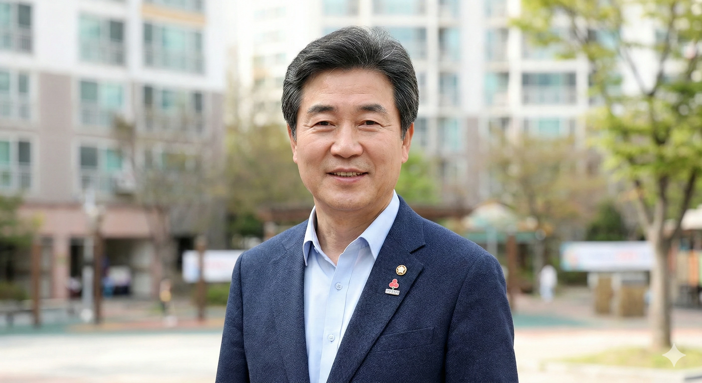
"탈당과 낙선의 시련을 딛고 일어선 좀비 오뚝이 정치인."
현 북구 병 3선 국회의원이자 더불어민주당 효빈시당 정책위원장. 입선동 종합사회복지관 관장 출신으로 현장에 뼈를 묻은 복지 전문가다. 당적을 이리저리 옮기는 시련을 겪다가 북구 분구의 수혜를 입어 화려하게 부활한 입지전적인 캐릭터다.
- 혜성 같은 구원투수 (18대): 북구 갑 맹주 조상현 의원의 지병 악화로 긴급 수혈되어 통합민주당 전략공천으로 데뷔했다. 당시 윤대환 시장의 기행 덕에 58.61%로 손쉽게 당선되었다.
- 반란과 시련의 야인 생활: 19대 총선 때 조상현이 복귀하자 공천에 불복해 무소속으로 출마했다가 20.44%로 대패. 20대 총선 땐 안철수 바람을 타고 국민의당으로 나와 35.04%를 얻었으나 또다시 조상현에게 패배했다. 조상현 전담 일진이 될 뻔했다.
- 북구 병의 맹주 (21대~): 바른미래당 창당 직전 "보수 야합 불가"를 외치며 탈당 후 민주당에 복당. 마침 북구 인구 폭증으로 '북구 병'이 신설되자 21대 총선에서 80.69%로 12년 만에 금배지를 되찾았다. 조상현 의원과도 앙금을 풀고 윈윈하는 훈훈한 결말을 맞이했다.
- 여담: 국회 내 손꼽히는 사회복지 마당발로 환노위/보건복지위를 꽉 잡고 있다. 현역 공천 탈락, 탈당, 무소속, 국민의당 등 정치인으로서 치명적인 테크트리를 다 탔음에도 기어이 3선 중진으로 살아남은 진정한 멘탈갑.
2.5. 신진영 (안천구 을 국회의원)
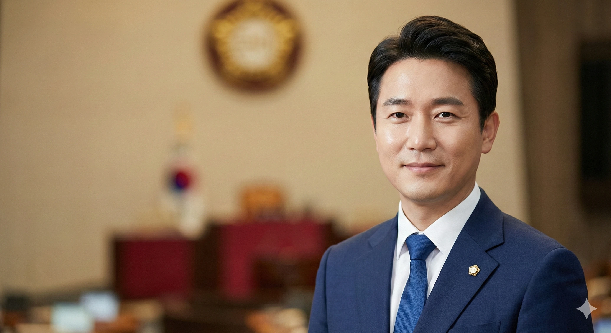
"7전 8기 안천의 끈기, 돌고 돌아 민주당에서 꽃피운 안천의 아들."
학부 시절 사회과학대학 로비를 장식하던 대자보 배틀의 핵심 논객이자 효빈대 제34대 총학생회장 출신이다. 30대 초반부터 무소속과 제3지대를 전전하며 안천 을에 도전했으나 번번이 고배를 마시다가, 마침내 22대 총선에서 당선의 기쁨을 맛본 생존왕이다.
- 험난한 도전: 19대 총선에서 30세 무소속으로 27.51% 돌풍. 20대 총선에선 국민의당 돌풍을 타고 35.10%를 찍었으나 민주당에 4.41%p 차이로 석패했다. 21대 때는 민생당으로 출마해 13.20%로 완전히 꺾이는 듯했다.
- 뒤늦게 본 빛 (22대): 21대 때 76.89%로 압승했던 민주당 유산성 의원이 지역 관리를 방치하자 틈을 파고들어 민주당으로 입당했다. 권리당원 지지를 바탕으로 경선에서 현역 유산성을 꺾는 이변을 연출했다.
- 안천의 오뚝이: 당적을 5번(무소속->국민의당->바른미래당->민생당->민주당) 옮긴 프로 이직러지만, 지역 밀착형 조기축구회 행보 덕분에 주민들은 "오죽했으면 저러겠냐"며 철새가 아닌 생존왕으로 인정해주는 분위기였다고 한다.
2.6. 신수인 (청엽구 갑 국회의원)
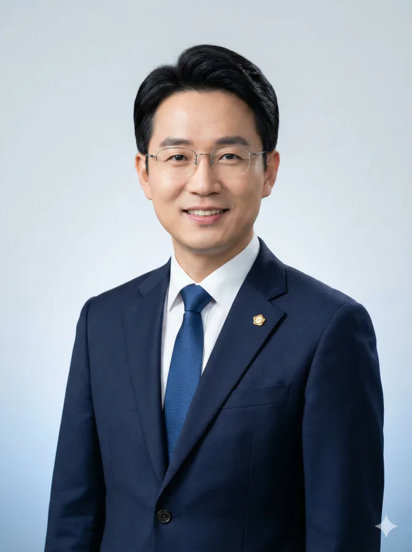
"청엽의 아들, 보수 정당에겐 그야말로 통곡의 벽."
효빈대 메디컬 타운 소속 약학대학 출신으로, 우전동에서 10년 넘게 '수인약국'을 운영한 성골 청엽 토박이다. 두 번의 선거에서 모두 85% 이상의 득표율로 상대 당 후보를 확인 사살시키는 극강의 지역 장악력을 보여주고 있다.
- 압도적 데뷔: 21대 총선 영입 인재로 출마해 미래통합당의 불굴의 도전자 원춘석 후보를 상대로 무려 85.21% vs 11.17%로 7배가 넘는 득표 차이를 냈다.
- 이름 해프닝: 이름이 '수인'이라 유권자들이 여성인 줄 알았다가 명함을 받고 "어? 남자네?" 하는 반응이 다반사다. 이름은 청순가련한데 실물은 듬직한 약사 아저씨다.
- 원춘석 킬러: 22대 총선 리턴 매치에서는 득표율을 더 끌어올려 87.51% vs 8.47%라는 비현실적인 스코어로 원춘석 후보를 선거비용 전액 미보전 지옥으로 밀어 넣었다. 지역구에선 "원춘석은 신수인만 만나면 작아진다"고 농담을 던진다.
2.7. 추산령 (창전구 갑 국회의원)
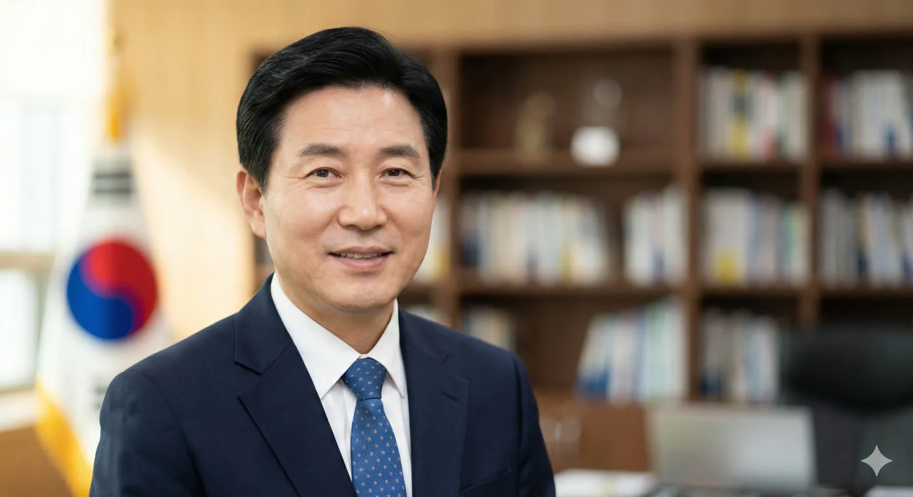
"효빈대의 정신적 몽둥이, 여의도를 후려치다."
인문대학 철학과 특유의 집요한 논리력과 토론 능력을 바탕으로 국정감사에서 상대를 탈탈 터는 것으로 악명이 높다. 이념이나 당론보다 '논리적 정합성'을 최우선으로 따지기 때문에 같은 당 내에서도 상대하기 까다로운 인물로 꼽힌다.
- 윤재훈 빌런 사태 당시 "너의 혐오는 존재론적 악이다"라는 명언을 남긴 철학과 교수의 직계 애제자 출신이다.
- 국회에서도 말문이 막히게 하는 소크라테스식 문답법을 즐겨 사용하여 피감기관장들의 혈압을 올리는 데 도가 텄다.
질문을 질문으로 막아버리는 말싸움의 신이다.
2.8. 박청권 (탄성군 국회의원)
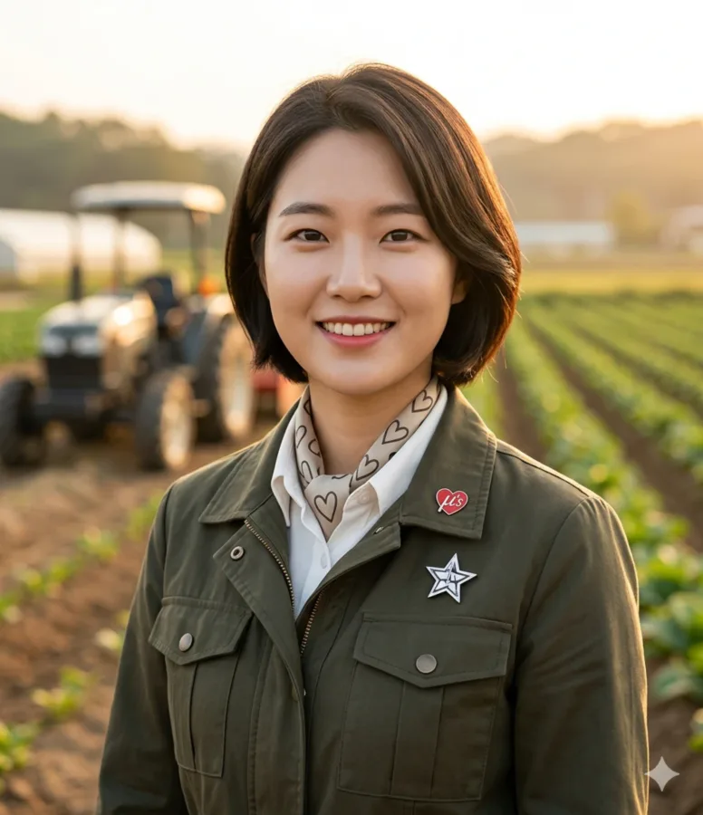
"탄성이 키운 청년 농부, 헌정 사상 최연소 돌풍이자 숨은 덕후."
1999년생(당선 당시 만 24세)으로 22대 국회 최연소 지역구 국회의원이라는 대기록을 썼다. 여성임에도 박력 넘치는 이름 때문에 남성 의원으로 자주 오해를 받는다. 박현만 전 시장의 정치적 후계자로 탄성군에 전략공천되어 압도적인 몰표를 받았다.
- 청년 농부 영입: 서목읍 '박가네 농장' 출신의 진짜배기 청년 농부. 박현만 의원의 건강 악화로 불출마 선언 후, 민주당 영입 인재로 발탁되어 22대 총선에서 무려 82.12%의 득표율을 기록, 보수 성향 농촌 지역까지 싹쓸이했다.
- 헤비 오타쿠: 건실한 농부 이미지 뒤에 엄청난 덕력을 숨기고 있다. 지역구 서목읍(西木邑)이 '니시키노 마키(西木野真姫)' 성지와 엮이자 "마키 짱이 내 지역구라니!"라며 흥분했다고. 유세 트랙터에 최애캐 스티커를 붙이고 다녔다는 괴담이 있다.
- 이름 해프닝 & 막내즈: 듬직한 이름 탓에 군대 영장이 잘못 날아오고, 국회 첫날 경위가 남성 화장실을 안내하기도 했다. 서구 지선진 의원(96년생)과 함께 '효빈 막내즈'로 불리며, 틈만 나면 신작 애니 떡밥을 물어보다가 핀잔을 듣는다.
3. 재계·기업인 (효빈시의 자본과 덕력)
효빈시를 아시아의 '오타쿠 성지'로 만드는 데 엄청난 자본과 열정을 쏟아부은 자본주의+덕업일치의 표본들이다. 돈을 버는 이유가 굿즈를 사기 위해서라 카더라.
3.1. 최대현 (효빈교통공사 사장)

"HAF 사령관이자 돈 버는 덕후의 마스터피스."
현 효빈교통공사 제3대 사장. 은사였던 오다구 전 사장의 'Neo-Moe Strategy (신 모에 전략)'를 계승 및 확장하여 효빈시 철도 시스템을 완벽하게 오타쿠 친화적으로 개조했다. 학부 시절 '아이돌물 애니메이션 가극단의 수익 모델이 철도 경영에 미치는 영향'이라는 기괴한 석사 논문을 썼다. 아이마스와 럽라를 동시에 파는 '양다리 프로듀서'로 악명(?)이 높다.
3.2. 옥덕호 (칠양여객고속 대표)
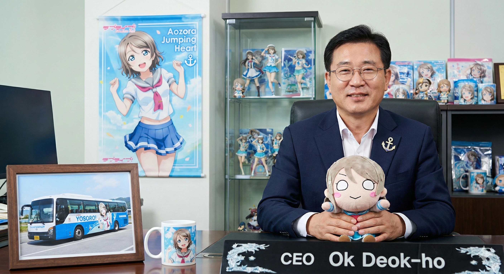
"효빈시의 수호신이자, 야구방망이 아저씨."
칠양여객고속의 대표이사이자 효빈종합버스터미널의 실질적 지배자. 텐노지 리나와 헤안나 스미레를 미친 듯이 사랑하는 성공한 덕후다. 윤대환 전 시장이 자신의 최애(와타나베 요우) 래핑 버스에 침을 뱉자 야구방망이를 들고 추격해 실금하게 만든 사건은 이미 전설을 넘어 신화다. 오시를 건드리면 X되는 거에요.
3.3. 강지훈 (IT 스타트업 '오타쿠피아' 대표)
"효빈시 덕후들의 스마트 라이프를 설계한 코더."
효빈시의 교통 환승, 애니메이션 이벤트 정보, 콜라보 카페 재고 현황을 실시간으로 알려주는 필수 앱 '오타쿠피아'를 개발한 IT 스타트업 대표. 학부 시절 코딩 과제 중 스트레스를 받으면 'BanG Dream! Girls Band Party!'를 Expert 난이도로 풀콤보를 치며 멘탈을 회복했다고 한다. 신입 개발자 면접 때 리듬 게임 고난이도 곡 클리어를 요구한다는 괴담이 있다.
3.4. 마기철 (F&B 프랜차이즈 '치킨무림' 대표)
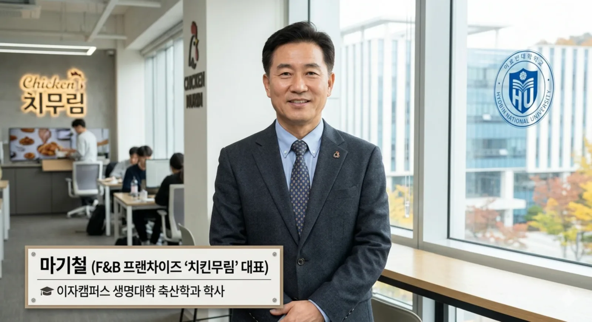
"HAF의 닭을 책임지는 자비 없는 튀김의 신."
전국에 500개 가맹점을 거느린 치킨 프랜차이즈 '치킨무림'의 창업자이자 대표. 학부 시절 부속 목장에서 수제 치즈와 요구르트를 만들며 미각을 벼렸고, 이를 치킨 튀김옷 배합에 응용하여 대박을 쳤다. HAF 기간에는 푸드트럭 수십 대를 동원해 '니코니코 양념치킨', '가라아게 카레' 등을 완판시키며 덕후들의 칼로리를 든든하게 채워준다.
3.5. 남궁도 (AI 스타트업 '뉴럴-모에' 창업자)
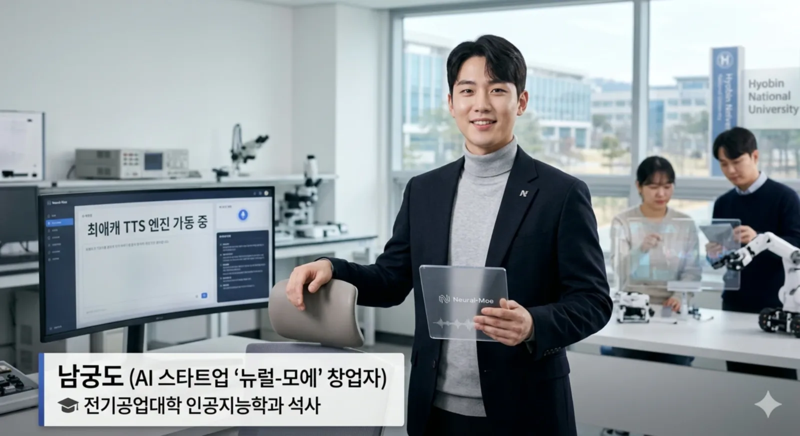
"2D를 3D로 구현하려 한 매드 사이언티스트."
텍스트를 입력하면 사용자의 '최애캐' 목소리를 완벽하게 모사해 읽어주는 TTS(Text-to-Speech) AI 엔진을 개발한 천재 개발자. 그의 스타트업 '뉴럴-모에'는 빅테크 기업에 수백억 원에 인수되며 대박이 났다. 현재 이 기술은 효빈시 교내 트램의 야간 안내방송용 AI 성우 시스템에 시범 도입되어 있다.
4. 학계 및 교육계
효빈대를 지식의 전당이자 광기의 랩실(...)로 이끈 거장들이다.
4.1. 민부선 (효빈대학교 제26대 총장)
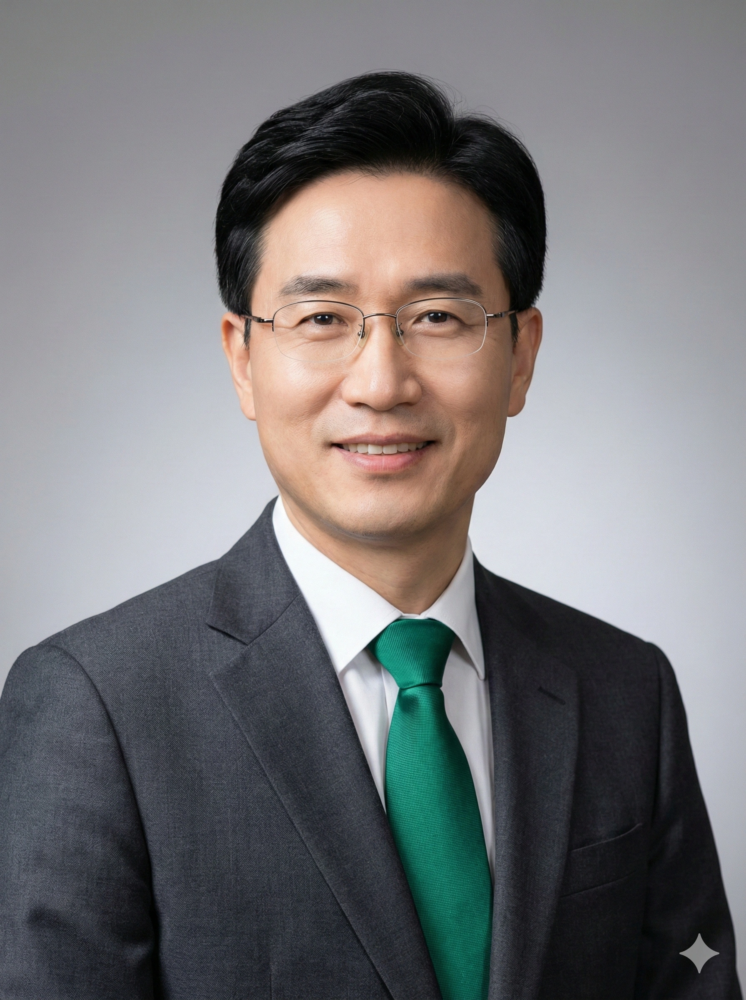
"고양이 총장님의 충실한 집사이자 혁신적인 행정가."
효빈대학교 제26대 총장. 본인의 전공인 '사회복지경영론' 강의에서 애니메이션 <아이돌 마스터>의 프로덕션 경영 사례를 끌고 와 학생들을 충격에 빠뜨린 전적이 있다. 학생들 사이에서는 "진짜 총장은 총장실에 사는 길고양이고, 민부선 총장은 대외협력처장(집사)일 뿐이다"라는 '고양이 총장설' 밈이 돌고 있으며, 본인도 이를 즐긴다고 한다.
4.2. 오다구 (전 효빈교통공사 사장, 명예교수)
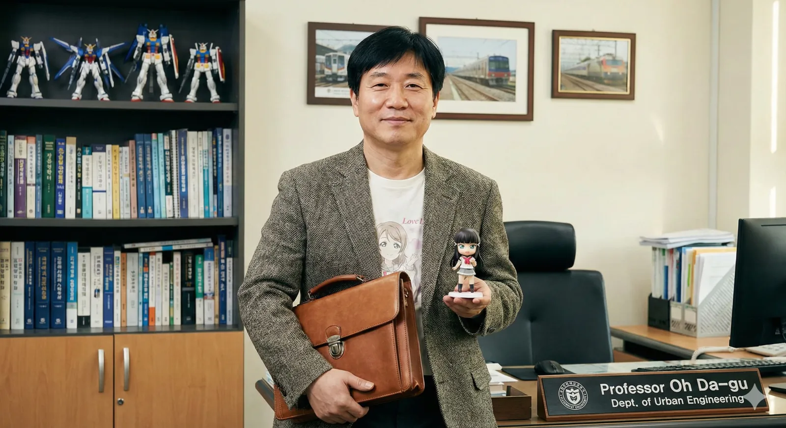
"효빈 서브컬처의 아버자이자 철도 행정의 마스터."
효빈교통공사 초대 사장이자 교통대학의 살아있는 전설. 이름부터가 심상치 않다. 학부생 시절부터 "모에(萌え)가 세상을 구한다"고 설파하며 철도와 캐릭터 비즈니스의 결합을 연구했다. 최대현 현 효빈교통공사 사장의 직속 스승이며, 랩 미팅 때 러브라이브 굿즈를 걸고 퀴즈를 냈다는 기행으로 유명하다.
4.3. 백우진 (한국항공우주연구원 수석연구원)
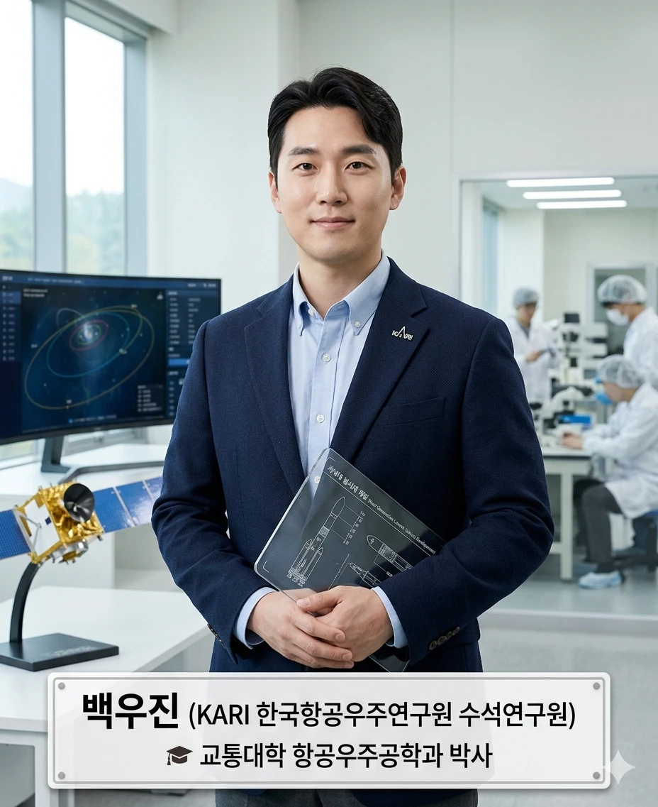
"대운동장 잔디를 태워 먹은 효빈의 스페이스X."
현재 KARI(한국항공우주연구원) 수석연구원으로 대한민국 차세대 발사체 개발의 핵심 브레인이다. 학부 시절부터 범상치 않은 기인(奇人)으로, 대운동장에서 불법(?)으로 소형 하이브리드 로켓을 쏘아 올리려다 폭발해 잔디를 새카맣게 태워 먹은 전설을 남겼다. 이 사건으로 정학을 당할 뻔했으나, 기체의 공기역학적 완성도를 본 교수님이 멱살 잡고 랩실 노예로 끌고 가버려 무사히 학위를 마칠 수 있었다고 한다.
5. 법조·의료·언론·공공기관
효빈시의 법, 건강, 언론, 안전을 수호하는 엘리트들. 본업에 충실하면서도 어딘가 하나씩 효빈대스러운 나사 빠진(?) 매력을 지녔다.
5.1. 정유리 (효빈지방검찰청 부장검사)
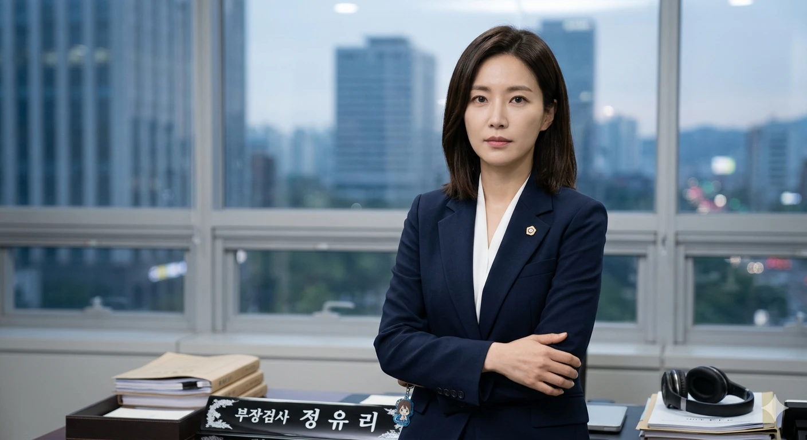
"법봉 대신 형광봉을 든, 윤대환 일가의 저승사자."
효빈지방검찰청 특수부 부장검사. 과거 윤대환 전 시장의 비리를 파헤쳐 구속 송치한 담당 검사이자, 그 아들인 윤재훈의 온갖 기행(빵 테러, 공용물 파손 등)에 철퇴를 내린 장본인이다. 평소엔 피도 눈물도 없는 냉혈한 같지만, 야근하며 공소장을 작성할 때 러브라이브 아쿠아(Aqours)의 노래를 노동요로 크게 틀어놓는다는 사실이 후배 검사들에게 발각되어 '덕밍아웃'을 당했다.
5.2. 서수진 (효빈대학교 부속 동물병원장)
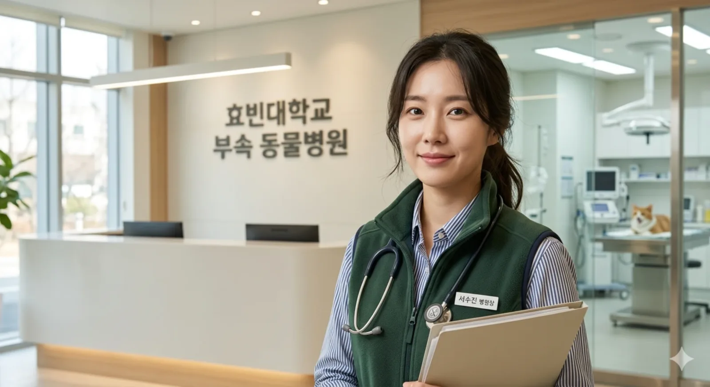
"메디컬 타운의 미친 칼잡이, 동물의 수호신."
메디컬 타운 통합 의과대학 체제의 상징적인 인물. 인수공통감염병 연구의 권위자이면서 외과 수술의 신이다. 캠퍼스 마스코트인 길고양이가 로드킬을 당할 뻔했을 때, 의대 외과 교수들까지 호출하여 세기의 합작 수술을 집도해 살려낸 일화로 유명하다.
5.3. 강철민 (효빈소방서 특수구조대장)
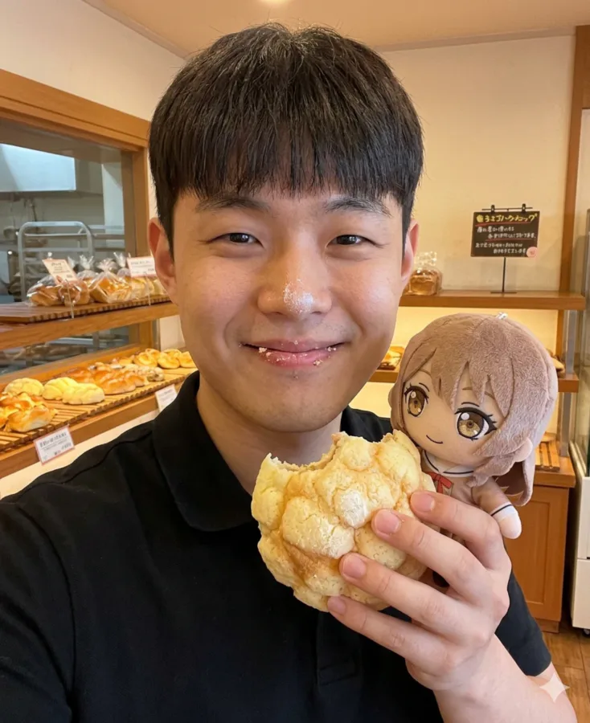
"HAF 인파 통제의 마스터이자 캡틴."
매년 10만 명 이상이 몰리는 효빈 애니메이션 페스티벌(HAF)의 현장 소방/구급 통제를 총괄하는 영웅. 한여름 코스프레를 하다 열사병으로 쓰러지는 오타쿠들을 빛의 속도로 이송하며 단 한 건의 압사 사고도 허용하지 않았다. 본인도 근육질의 몸으로 비번 날 코스프레를 즐긴다는 목격담이 있다.
5.4. 한지원 (인권 및 문화예술 전문 변호사)
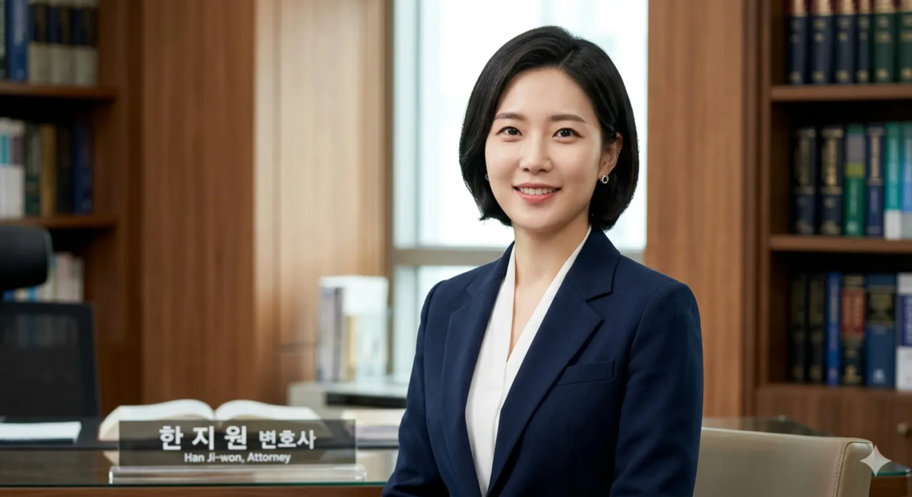
"덕후들의 초상권을 수호하는 법조계의 잔다르크."
웹툰 작가들의 노예 계약 무효 소송이나 코스플레이어 초상권 침해 관련 소송을 전문으로 맡아 백전백승을 거두고 있는 변호사. 과거 HAF 행사장에서 여성 코스플레이어들을 무단으로 촬영해 불법 사이트에 올린 파파라치 일당을 고소해 전원 실형을 먹게 한 '참교육' 사건으로 서브컬처 팬들 사이에서 성녀(聖女)로 추앙받고 있다.
5.5. 오수아 (정신건강의학과 전문의)
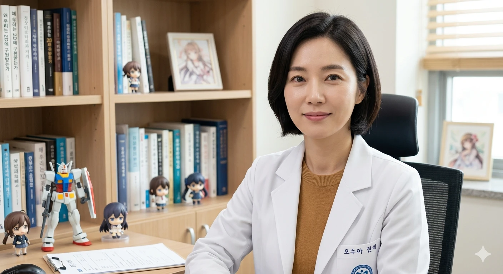
"2D 힐링 요법을 창시한 의학계의 이단아."
강주병원(강주캠퍼스) 정신건강의학과 센터장이자 베스트셀러 『왜 우리는 2D에 구원받는가』의 저자. 우울증이나 번아웃이 온 환자나 고시생들에게 "애니메이션 정주행"이나 "건담 프라모델 조립"을 임상적 치료법(일명 2D 힐링 요법)으로 권장하는 독특한 철학을 가졌다. 본인도 대학 시절 해부학 실습 트라우마를 치유계 애니메이션으로 이겨냈다고 당당히 간증한다.
5.6. 차수호 (탐사보도 전문 기자)
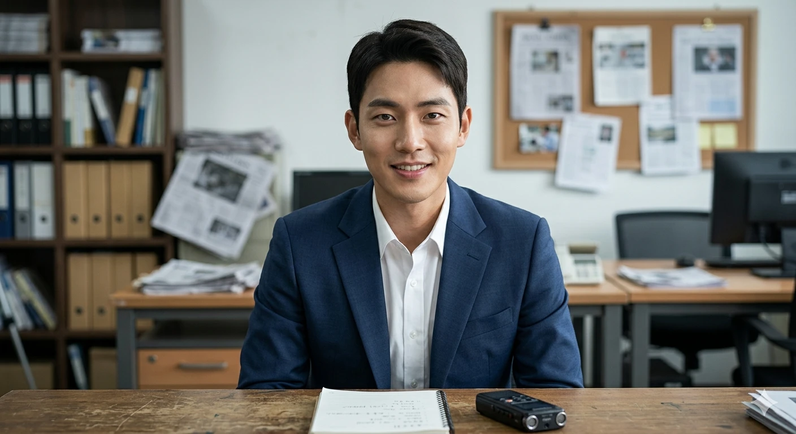
"효빈대신문 편집장이 길러낸 물어뜯는 불독."
국내 유력 방송사의 간판 탐사보도 기자. 대학 시절 교내 언론인 효빈대신문 편집장을 지내며 대학 본부 비리를 캤던 짬바를 살려, 기자가 된 후 윤대환 전 시장 시절의 '두청운수 리베이트 및 5호선 비자금 사건'을 끝까지 파헤쳐 특종을 터뜨렸다. 취재 중 용역 깡패들의 협박을 받았으나 삼단봉처럼 펼쳐지는 장우산으로 제압해버렸다는 영화 같은 썰이 있다.
6. 문화·예술·방송
효빈대의 예술적 똘기와 관종력을 무기로 전국구 스타가 된 동문들이다. 베르데 홀이 낳은 괴물들이 많다.
6.1. 최지훈 (애니메이션 총감독)
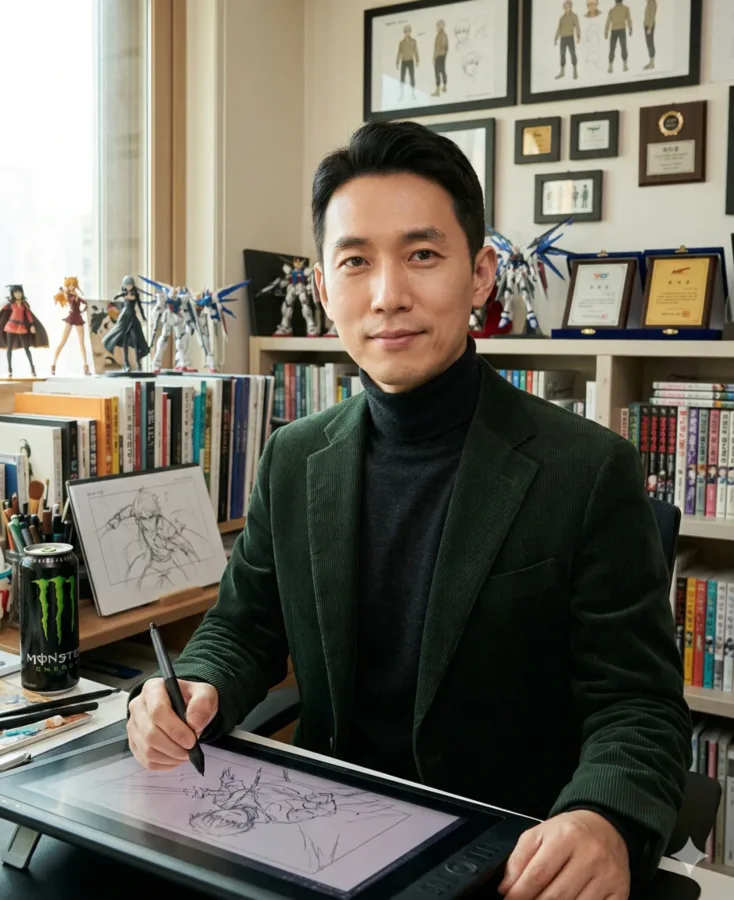
"뼈를 깎아 프레임을 만드는 효빈대의 자랑."
한국과 일본을 오가며 활동하는 최정상급 애니메이션 감독. 효빈 애니메이션 페스티벌(HAF)의 공식 오프닝 영상을 매년 노개런티 재능기부로 제작해주고 있다. 몬스터 에너지를 물처럼 마시며 작업하는 워커홀릭으로, 후배 특강에 와서 "애니메이터는 잠을 자지 않는다"는 명언을 남겼다.
6.2. 이가람 (성우)
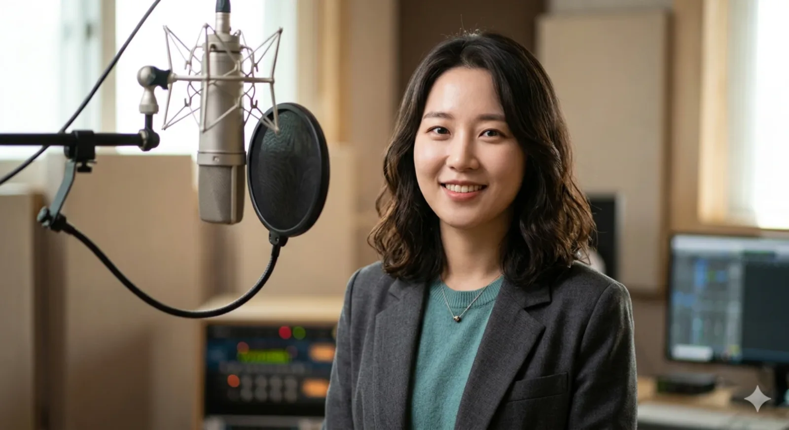
"효빈시 대중교통의 여신이자 천의 목소리."
국내 탑티어 성우. 게임, 애니메이션 더빙뿐만 아니라 효빈시 교내 트램 및 빈효선 광역전철의 한국어 안내방송을 전담하고 있다. 그녀의 맑고 청아한 "이번 역은 당선, 당선역입니다" 안내 멘트는 효빈대생들의 모닝콜이나 다름없다.
6.3. 송우진 (밀리언셀러 웹소설 작가)
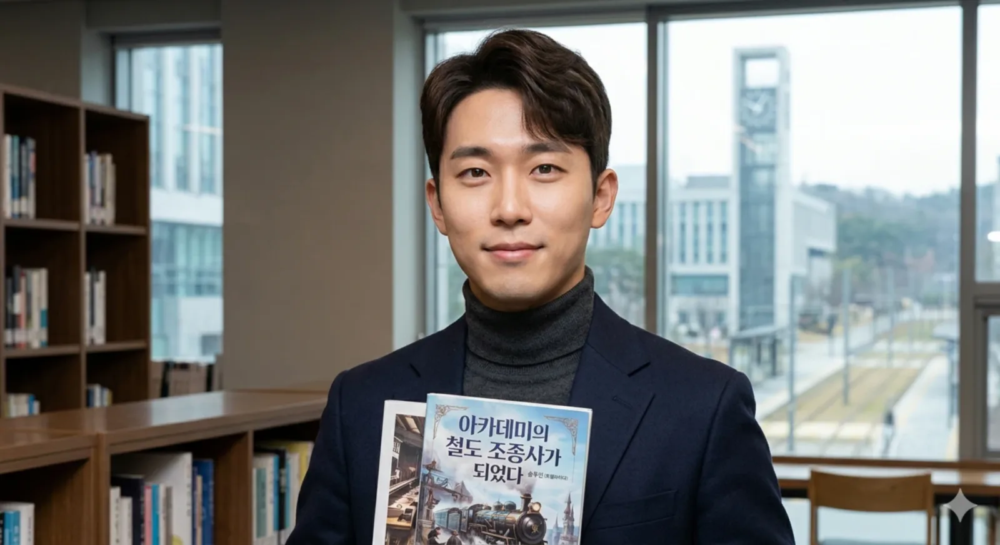
"캠퍼스를 마법진으로 만들어버린 상상력의 소유자."
메가 히트 퓨전 판타지 소설 『아카데미의 철도 조종사가 되었다』의 작가. 필명은 '트램라이더'. 소설 속 배경인 '마법 아카데미'의 구조가 효빈대학교 당선캠퍼스의 판박이이며, 마력 이동 수단이 정확히 트램과 모노레일 노선도를 따라가고 있어 효빈대생들이 성지순례하듯 읽었다.
6.4. 윤세아 (250만 종합 서브컬처 유튜버)
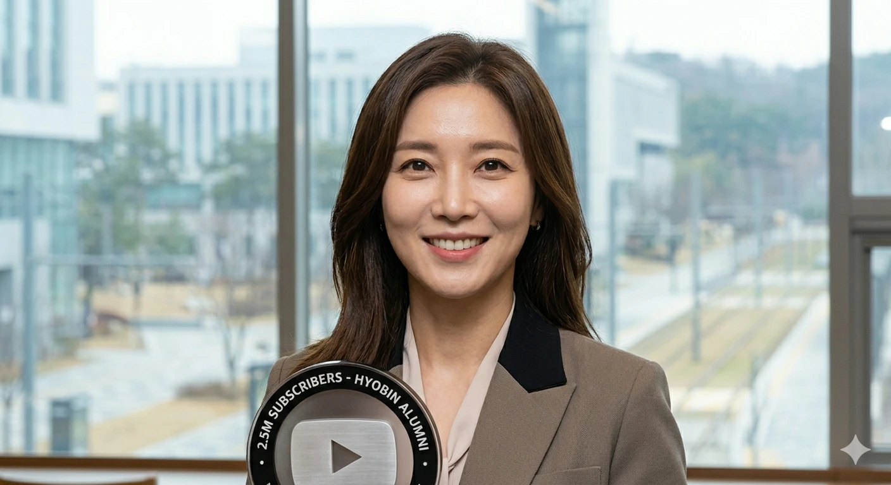
"HAF의 여신이자 효빈시 홍보대사 유튜버."
게임, 애니 리뷰, 코스프레 브이로그 등을 주력으로 하는 대형 인플루언서. 그녀의 채널이 초기 떡상하게 된 결정적인 계기가 바로 윤재훈 빌런 사태였다. 학생식당 빵 테러와 트램 난동 사건을 전공 카메라로 4K 화질로 담아내어 특종(?)을 터뜨린 것이 대박이 났다.
6.5. 김도윤 (인디 밴드 '레일로드' 보컬)
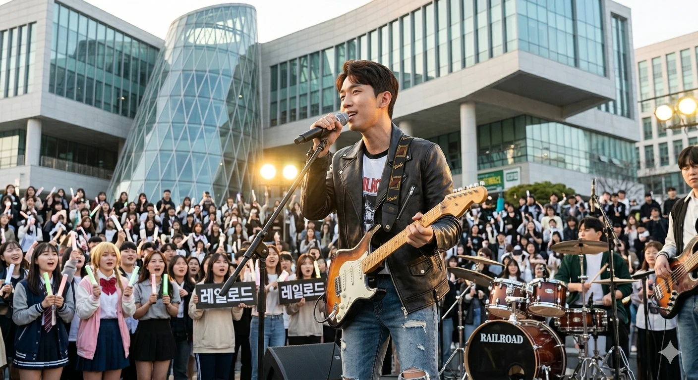
"효빈대의 낭만이자 서브컬처 밴드의 전설."
인디 밴드 '레일로드(Railroad)'의 메인 보컬. 자작곡뿐만 아니라 유명 애니메이션 OST를 락 사운드로 편곡하여 부른다. 대학 시절 베르데 홀 앞 노천극장에서 버스킹을 하던 도중, 지나가던 박효빈 시장이 난입해 'God knows...'를 듀엣으로 부른 영상이 조회수 1,000만을 찍으며 전국구 스타가 되었다.
6.6. 서지수 (네이버웹툰 간판 작가)
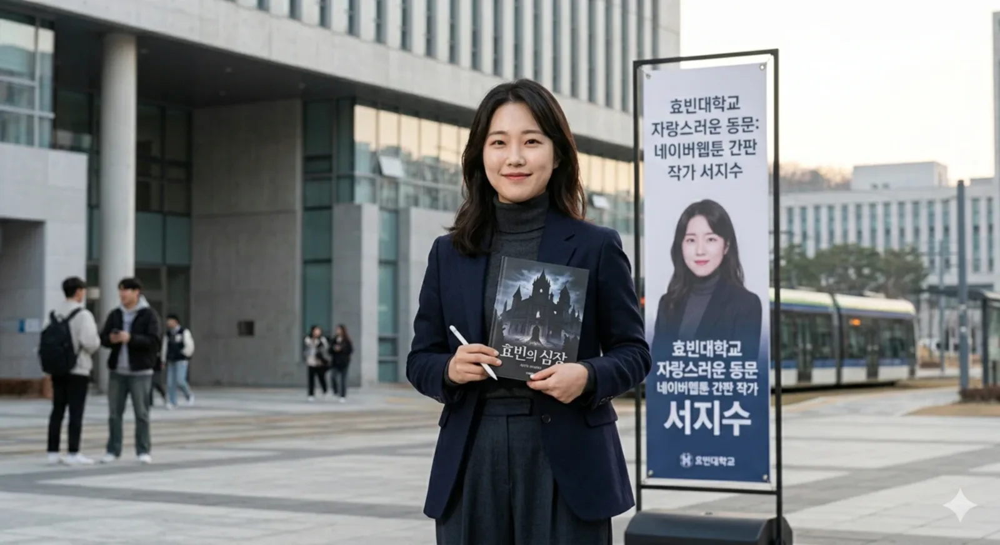
"효빈대의 건물을 악당의 성으로 만들어버린 다크 판타지 장인."
네이버웹툰에서 최상위권 조회수를 기록 중인 메가 히트 다크 판타지 웹툰 <효빈의 심장>의 작가. 작중 최종 보스가 거주하는 음산한 '마왕성'의 외관이 기계공업대학 5호관 건물과 100% 일치하며, 지옥의 도서관은 중앙도서관의 구조를 그대로 가져다 썼다는 사실이 밝혀져 효빈대생들의 큰 웃음을 자아냈다. 야작(야간 작업)에 찌든 서양화과 시절의 한(?)을 작품에 담아냈다고 한다.
6.7. 정시우 (서브컬처 전문 대중음악 프로듀서)
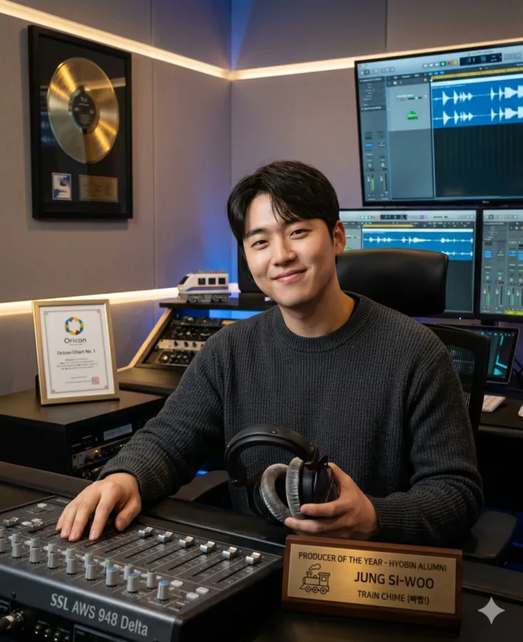
"트램 진입음(빠빰!)부터 애니메이션 OP까지 섭렵한 마이다스의 손."
K-POP 아이돌 타이틀곡과 국내외 유명 애니메이션 오프닝 곡을 다수 작곡한 히트 메이커. 학부 시절 교내 트램 A선이 역에 진입할 때 나오는 청량한 BGM을 작곡비 명목으로 학생식당 식권 10장을 받고 만들어준 전설적인 일화가 있다. 교수님에게 고전 화성학 시험에서 C+를 받았으나 오리콘 차트 1위를 찍어버리며 통쾌한 복수(?)를 달성했다.
6.8. 유나영 (월드클래스 코스튬 디자이너)
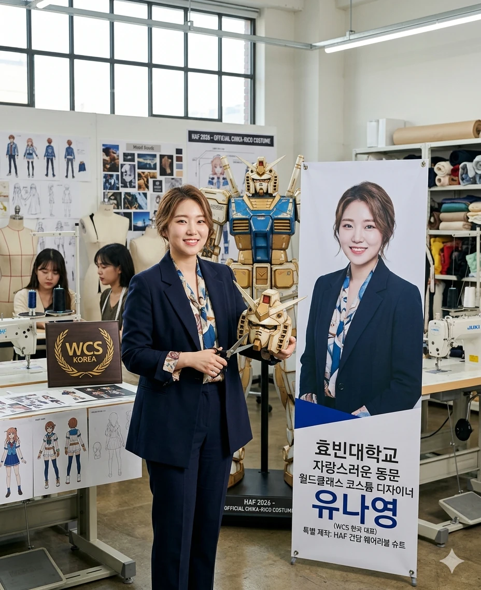
"HAF의 의상을 통제하는 코스튬의 여왕."
세계 코스프레 서밋(WCS) 한국 대표 출신으로 현재 글로벌 영화 및 애니메이션 실사화 프로젝트의 의상 감독으로 활동 중이다. 대학 시절 의류의상학과 졸업 작품으로 오트쿠튀르 대신 1:1 스케일의 완벽한 퀄리티 건담 웨어러블 슈트를 만들어내어 교수진을 경악시켰다. 매년 HAF 때마다 박효빈 시장을 위해 특별 제작한 코스프레 의상(무상 협찬)을 보내는 것으로 알려져 있다.
7. 스포츠 및 e스포츠
공부와 덕질만 잘하는 게 아니다. 몸과 피지컬(그리고 손가락 피지컬)로 세계를 제패한 인물들도 존재한다.
7.1. 한태성 (전직 LoL 프로게이머, 현 감독)
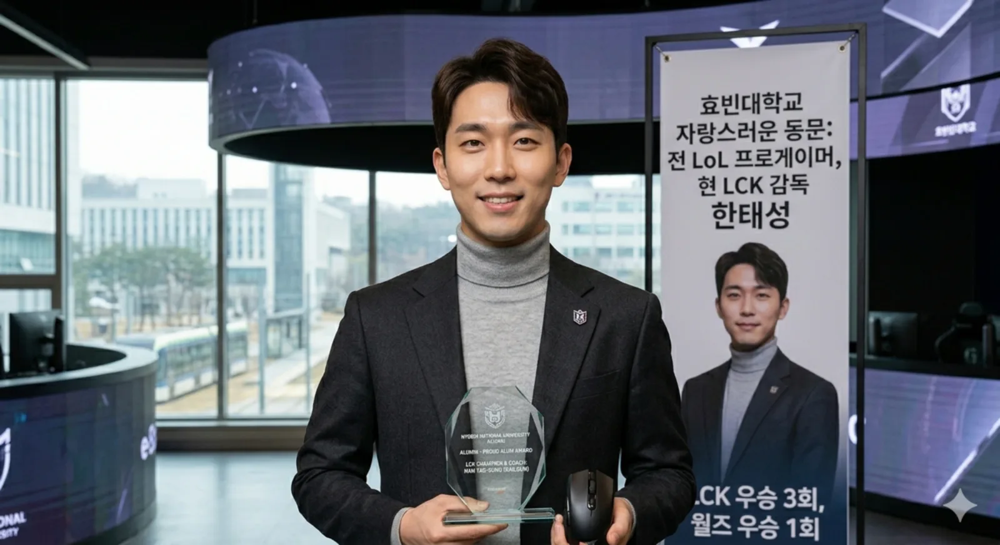
"전산교육관 e스포츠 아레나가 낳은 월드클래스 미드라이너."
닉네임 'Railgun'. 리그 오브 레전드(LoL) 월드 챔피언십 우승자 출신이자 현직 LCK 감독. 학부 1학년 때 수업은 안 들어가고 교내 전산교육관(45동) 1층 e스포츠 라운지에서 살다시피 하다가, 압도적인 피지컬로 프로 팀에 스카우트되어 쿨하게 자퇴서를 냈다. 진정한 재능 낭비(?) 방지 사례. 은퇴 후 교내 e스포츠 대회에 몰래 출전해 학우들을 학살하고 다녔다는 소문이 있다.
7.2. 마동철 (유도 국가대표, 올림픽 금메달리스트)
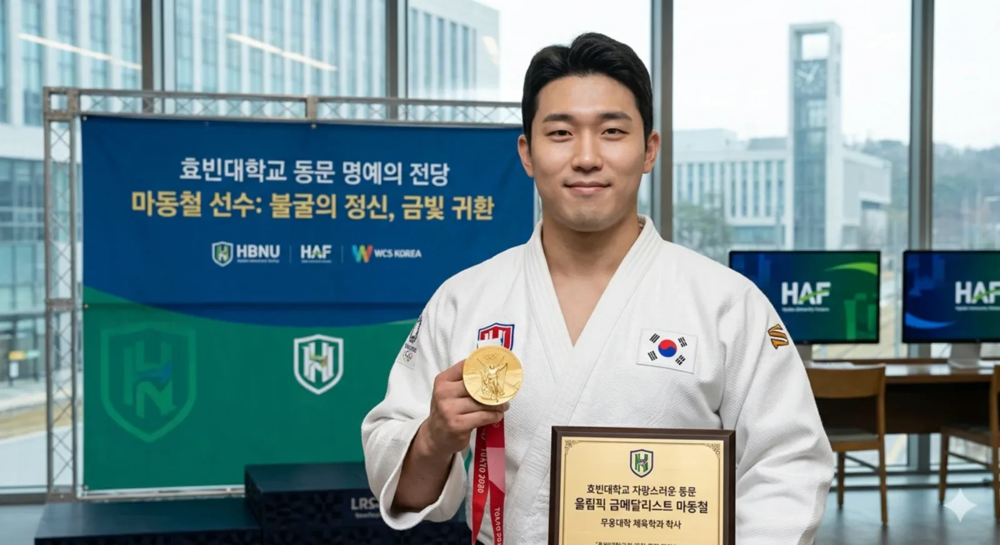
"효빈대의 물리적 방패, 걸어 다니는 흉기."
올림픽 유도 무제한급 금메달리스트. 학부 시절부터 곰 같은 덩치와 무시무시한 악력으로 유명했다. 윤재훈이 베르데 홀에서 일본 성우들을 위협하며 난동을 부렸을 때, 최전선에서 인간 방패가 되어 준 인물이다. 당시 윤재훈이 쇠파이프를 휘두르려 하자, 마동철이 가볍게 깃을 잡고 눈빛만 쐈는데 윤재훈이 바지에 오줌을 지리고 주저앉았다는 이야기가 전설처럼 내려온다. 본인 피셜: "업어치기 하려다 참았습니다. 땅이 울릴까 봐요."
7.3. 강태양 (국가대표 야구선수, 강속구 투수)
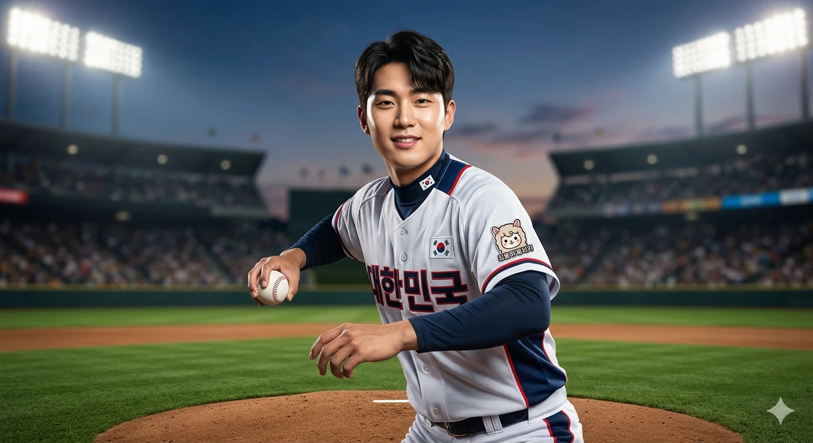
"마운드를 불태우는 155km/h의 진성 애니 덕후 투수."
프로야구 정규리그 다승왕이자 국가대표 에이스 투수. 학부 시절 교내 대운동장 야구 대회에서 너무 전력을 다해 던지다가 전광판을 박살 낸 일화로 스카우터들의 눈에 띄었다. 야구 애니메이션 '메이저(MAJOR)'를 보고 투수의 꿈을 키운 진성 오타쿠로, 홈구장 마운드에 등판할 때 구단에 특별히 요청하여 러브라이브나 뱅드림 노래를 등장곡(BGM)으로 틀어버리는 기행을 저지른다.
8. 여담 및 동문 일화
- 학연의 힘?: 국회나 시의회에서 효빈대 출신 정치인들이 여야로 갈려 싸우다가도, "아 쫌! 학교 후배 부끄럽게 이럴 깁니까?"라는 말 한마디에 갑자기 극적인 타협이 이루어지는 마법 촌극이 종종 발생한다.
- 덕후 카르텔: 오타쿠 문화에 관대한 것을 넘어, 아예 기업과 방송, 법조, 정계를 잇는 거대한 '덕후 카르텔'이 존재한다. 최대현 사장이 굿즈를 기획하면, 강지훈 대표가 앱으로 홍보하고, 윤세아가 리뷰 영상을 찍으며, 한지원 변호사가 저작권을 방어하고, 박효빈 시장이 행정적 예산을 쏴주는 완벽한 사이클이 돌아간다.
- 베르데 홀 동문회: 총동문회 행사를 호텔 연회장이 아니라 베르데 홀에서 코스프레 파티를 곁들여 진행한다는 무시무시한 괴담이 있다. 시장님부터가 앞장서서 건담 수트를 입고 즐긴다고 한다.
9. 가상 인물 (효빈교통공사 마스코트 캐릭터)
효빈교통공사의 마스코트 캐릭터이자, 작중 설정상 효빈대학교의 학위를 소지하고 있거나 현재 캠퍼스를 좀비처럼 누비고 있는 재학생 캐릭터들이다. 대외적으로는 교통공사의 홍보 요정이지만, 교내에서는 학점 테러와 예산 난도질, 월급 루팡을 일삼는 생생한 동문이자 학우들이다. 이들 덕분에 효빈대 내부에 강력한 '효빈대 철도 카르텔' 파벌이 형성되어 있다는 의혹이 파다하다.
9.1. 고나미 (Ko Nami)

"규정은 선배들의 피로 쓰였습니다. 메뉴얼 외울래?" 겨울왕국 안나 성우가 이 톤을 쓴다
효빈대학교 교통대학을 수석으로 박살 내고 졸업한 전설의 독종 엘리트. 흔들림 없는 원칙주의자(ISTJ)이자 효빈교통공사 마스코트 유니버스의 공포의 군기반장이다. 문과의 암기력과 이과의 물리 역학 센스를 다 갖춘 사기캐로, 학창 시절 철도와 관련 없는 생물 과목이 내신을 깎아 먹었다는 흉흉한 소문이 있다.
- 인간 안내방송기: 만취하면 평소의 철두철미함은 가출하고 입으로 "출입문 닫습니다. 췻-" 소리까지 내며 온 동네에 100% 싱크로율로 광역 지하철 안내방송을 쏘아대는 끔찍한 주사가 있다. 복귀 전담 요원은 남동생.
- 삼겹살 GTO 인버터 사건: 과 회식 자리에서 삼겹살 굽는 소리를 듣고 "미쓰비시 GTO 초기형 인버터 구동음과 주파수가 같다"며 주파수 튜너 앱을 켜서 기어이 증명해 내어 회식 자리를 빙하기로 만들었다. 정비창 대차(바퀴 틀)를 보며 가슴이 뛴다며 얼굴을 붉히는 중증 하드코어 철덕이라 일코는 진작에 실패했다.
9.2. 하루빈 (Ha Rubin)

"수학 5등급으로 공대를 뚫어버린 기적의 생기부" 그리고 합법적 월급루팡
고나미의 직속 대학 후배. 기계적 이해도와 수학은 일찌감치 유기한 중증 수포자(수학 5등급)였으나, 현란한 말빨과 입 털기, 영혼을 갈아 넣은 자소서와 면접 스킬로 교통대학에 기어코 합격한 의지의 처세술 만렙 인싸다.
- 자본주의 200% 미소: 진상 민원 완충 능력은 SSS급이라 타 부서에서도 노리지만, 실체는 퇴근 10분 전부터 찐웃음이 지어지는 현실적인 K-직장인. CCTV 사각지대에 숨어 월급 루팡 짓을 하다가 빡친 선배 고나미가 무전을 치면 에스컬레이터 오작동 민원 처리 중이라며 완벽한 거짓말로 위기를 모면한다. 고나미의 잔소리를 녹음한 '고나미 선배 극대노 ASMR.mp3'를 아침 기상 알람으로 쓴다.
- 모카 래핑 열차 광신도: 뱅드림 콜라보로 운행하는 '아오바 모카 래핑 열차'를 보며 직장 스트레스를 치유한다. 아침 출근길에 '아바라(아이스 바닐라 라떼) 벤티 사이즈'가 수혈되지 않으면 눈이 반쯤 감긴 채 좀비 상태로 서식한다. 수영복 샷 공개 당시 사기적인 하이퍼 글래머러스 체형(B95)임이 드러나 시청 서버를 마비시켰다.
9.3. 미소하 (Mi Soha)

"아기 목소리로 팩트 미사일을 쏘는 빨간 바인더의 악마"
박효빈 현 시장의 까마득한 직속 학과 직계 후배. 고교 시절 전교 1등을 놓치지 않았으며, 복지 정책을 현실의 뼈대로 다루기 위해 문과생임에도 이과 수학(미적분)과 통계학(R, Python)을 씹어 먹은 문·이과 통합형 천재다. 박효빈 시장을 구원자이자 절대적인 롤모델로 숭배하는 최고의 성덕이다.
- 심판의 빨간 바인더: 겉보기엔 베이비 옐로우 원피스를 입은 청순가련한 비주얼(오사카 시즈쿠 도플갱어)에 극도로 혀가 짧은 아기 목소리(CV. 김채하 / 쿠노 미사키)를 내지만, 입만 열면 예산안을 엑셀 단위로 조져버린다. 빡치면 3.8kg짜리 예산 분석 빨간 바인더를 실수인 척 빌런의 정강이에 떨어뜨려 상황을 진압하는 합법적 둔기 마스터.
- 위장 파괴자 맵부심: 학업 스트레스를 캡사이신으로 풀며, 엽떡 가장 매운맛이나 마라탕 5단계를 평온한 얼굴로 떠먹으면서 태블릿으로 통계 논문을 읽는다. 매 디저트 사진을 인스타에 올릴 때도
#밀가루값_폭등에_따른_소상공인_타격_분석따위의 정책 해시태그를 달아 박라미의 감성을 썩어 문드러지게 만들었다.
9.4. 임세하 (Im Seha)

"기계 앞에서는 랩을 뱉고 사람 앞에서는 고장 나는 중증 공대 너드"
회주공업 시절의 낭만과 근본을 사랑하며, 입만 열면 코딩, 모터, 납땜, 배터리 효율 TMI를 속사포로 쏟아내는 INTP형 너드. 필리핀 다문화 가정 6남매 중 넷째로, 대가족의 생계 전선 탓에 이중언어(영어)는 사치였던 탓에 필수 교양 '대학 영어'에서 무참히 털리며 평점 2점대를 기어 다니고 있다.
- 수제 GPS 우정 전자발찌: 05년생 찐친인 미소하, 전노아 등에게 직접 납땜해 만든 '수제 우정 스마트 밴드'를 선물했으나, 사실은 자신 몰래 둘이서만 밥 먹으러 가면 폰으로 알림이 오게 코딩한 위치 추적기였다. 친구들이 경악해 풀려고 하자 세상 불쌍한 강아지 눈물 연기로 봉인해 버렸다. 지인들을 곁에 가둬두고 사육하려는 핑크빛 소유욕(얀데레) 경보가 종종 발령된다.
- 정비복 속의 중장갑 반전 피지컬: 평소 헐렁한 정비복과 시커먼 체크셔츠 속에 몸을 숨기고 다녔으나, 해변 단체 사진이 유출되면서 사기적인 베이글 중장갑 체형(B87)이 드러나 공대생들의 여신으로 떡상했다. 이 반전 피지컬 덕분에 2026년 HAF 포스터 주 모델 투표에서 대역전극을 펼치며 대상을 거머쥐었다. 국어 시험에서 '푸른 커튼의 감정'을 묻자 단열재 난방 효율 20% 상승으로 대답해 국어 교사를 교무실에 눕힌 문학 고자다.